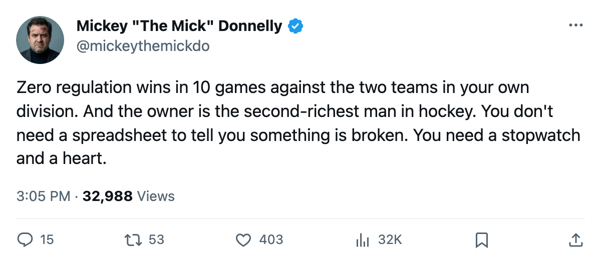
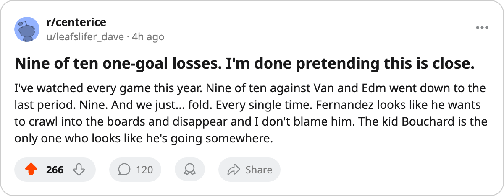

ZERO REGULATION WINS IN 10 GAMES AGAINST THE TWO CLUBS NEAREST YOU. AND THE OWNER BANKED $38.53 MILLION.
Minnesota's record against Vancouver and Edmonton is the worst pattern of failure in hockey: 9 of 10 one-goal games, 1 win in overtime, 0 regulation victories all season. The profit doesn't care.
 Mickey "The Mick" DonnellyColumnist, ex-goalie · The Penalty Box
Mickey "The Mick" DonnellyColumnist, ex-goalie · The Penalty Box
 Minnesota Wild has met
Minnesota Wild has met  Vancouver Canucks five times and
Vancouver Canucks five times and  Edmonton Oilers five times this season. They have not beaten either club in regulation, not once. Their combined record against the two teams that share their division is 0 regulation wins, 7 regulation losses, 1 overtime win, and 2 overtime losses across 10 games.
Edmonton Oilers five times this season. They have not beaten either club in regulation, not once. Their combined record against the two teams that share their division is 0 regulation wins, 7 regulation losses, 1 overtime win, and 2 overtime losses across 10 games.
Here is the damage, broken down.
| Opponent | GP | Reg W | Reg L | OTW | OTL | One-goal games |
|---|---|---|---|---|---|---|
| Vancouver Canucks | 5 | 0 | 4 | 1 | 0 | 4 |
| Edmonton Oilers | 5 | 0 | 3 | 0 | 2 | 5 |
| Combined | 10 | 0 | 7 | 1 | 2 | 9 |
Nine of 10 games were decided by a single goal. Minnesota won one, in overtime, against Vancouver. The other eight one-goal games were losses. The coach has had ten chances to put a team on the ice that can protect a one-goal lead for 20 minutes or steal one late, and he has produced one result in ten games. You do not need a Development Index to see that. You need a clock and a scoreboard.
The whole division story is worse. Minnesota Wild has 2 regulation wins across 19 division games this season, and both came against  Colorado Avalanche and
Colorado Avalanche and  Calgary Flames, clubs that finished ahead of them and behind them respectively in the standings. They cannot beat the two clubs closest to them on paper. They cannot beat them at home, where they are 12 and 21. They cannot beat them on the road either.
Calgary Flames, clubs that finished ahead of them and behind them respectively in the standings. They cannot beat the two clubs closest to them on paper. They cannot beat them at home, where they are 12 and 21. They cannot beat them on the road either.
And  Manny Fernandez87 starts 61.4 minutes a night for all of this. Fifty-three games, morale 72, $1.50 million, 81 in the Book. I stopped pucks for 60 games myself. I respect a goaltender who carries the load. But the man is 72 on the morale scale and he does it for a crease that gives up 227 goals in 62 games. You do not have to be a goaltender to feel sick after the 8th one-goal loss against a division rival.
Manny Fernandez87 starts 61.4 minutes a night for all of this. Fifty-three games, morale 72, $1.50 million, 81 in the Book. I stopped pucks for 60 games myself. I respect a goaltender who carries the load. But the man is 72 on the morale scale and he does it for a crease that gives up 227 goals in 62 games. You do not have to be a goaltender to feel sick after the 8th one-goal loss against a division rival.
Pierre-Marc Bouchard72 is 20 years old, up six on the Index, and he has 27 points in 62 games. He is the only man in that building whose form is moving in the right direction. He plays in front of 13,579 people paying $80 a ticket to watch a team lose by one goal and go to the bus.
And here is the number that ends the argument: $38.53 million. That is the profit. The second-highest in hockey. The payroll is $37.91 million, the second-lowest. The owner spends less than everyone and banks more than everyone except a Devils club that actually wins. The revenue is $69.00 million, which means people show up, buy tickets, buy beer, and go home 15 goals in 5 games against Vancouver. The math works. That is the problem. The math works and there is no reason for a single person in that building to change a single thing before the trade deadline in 19 days, and nothing will change after that either, because next year the profit is the same shape.
The coach cannot close. The owner does not care. The goaltender hates it. The kid is 20. You are paying $80 to watch 9 one-goal losses. Show up anyway, I guess.

